Dynamic SLAM: A Visual SLAM in Outdoor Dynamic Scenes
Shuhuan Wen , Senior Member, IEEE, Xiongfei Li , Xin Liu , Student Member, IEEE, Jiaqi Li , Sheng Tao , Yidan Long , and Tony Qiu
Abstract— Simultaneous localization and mapping (SLAM) has been widely used in augmented reality (AR), virtual reality (VR), robotics, and autonomous vehicles as the theoretical basis for robots to perceive their environment. Most popular SLAM algorithms assume that objects in the scene are static. Solving dynamic problems in SLAM is now attracting increasing attention. In this article, we propose a method that combines semantic segmentation information and spatial motion information of associated pixels to cope with dynamic objects based on ORB-SLAM2. We add a deep segmentation network SegNet to segment input image and obtain the semantic information for each feature point. Next, the spatial velocity of feature points between adjacent frames is calculated assuming uniform motion. Finally, the two parts are fused for the final judgment, and the dynamic feature points are removed to improve positioning accuracy. We evaluate our SLAM algorithms using the public KITTI dataset. The proposed algorithm has a similar overall accuracy level to ORB-SLAM2, but it is more accurate in sequences with many dynamic objects. On KITTI’s raw data sequence containing multiple dynamic objects, our pipeline achieves the best performance, improving 39.5% compared with the original ORB-SLAM2 system. We compare our algorithm with other state-of-the-art SLAM systems used to cope with dynamic environments. The results show that the proposed algorithm has a better performance.
Index Terms— Computer vision, dynamic objects, semantic segmentation, simultaneous localization and mapping (SLAM).
I. INTRODUCTION
using simultaneous localization and mapping (SLAM) by the sensor information and the perception functions. The vehicle determines its rotation and translation by repeatedly observing environmental features during movement. It then constructs a map for its movement without prior environmental information using the data obtained from the sensors. This process accomplishes the goals of localization and mapping at the same time.
Traditional visual SLAM assumes the scene where the vehicle is static or that there are only a small number of dynamic objects. Thus, when calculating the 3-D point of associated pixels, the locations of landmark points remain unchanged such that the pose of the vehicle can be estimated through the spatial geometric relationship. However, in most practical application scenarios, there exist dynamic objects, such as people and cars in the vicinity of the autonomous vehicle. These moving objects constantly cause errors in data association between frames to estimate the camera pose, which leads to positioning failure. Therefore, researchers begin to focus on SLAM in dynamic environments.
In recent years, deep learning has led to rapid developments in image processing. Deep learning is used to segment images, and great improvements have been achieved in its accuracy and speed [1], [2], [3], [4], [5]. The combination of semantic information provided by image detection, segmentation, and SLAM systems has also attracted extensive attention in recent years. Semantic information makes the system more robust by enhancing the understanding of the scene and eliminating interference from complex environmental factors such as illumination and occlusion at the same time. The semantic information can be used to construct the error term of the optimization function, improving the positioning accuracy of the whole system by optimizing it at the backend. Yang and Wang [6] present a semantic SLAM framework based on geometric constraint and deep learning models. Unlike this article, our front-end only uses the SegNet semantic segmentation module and does not use the neural network to obtain depth information, and the geometric method we use to cull dynamic points is also different from this article.
In recent years, scene flow has been used for 3-D motion estimation. Ma et al. [7] used a deep learning method to construct an error function according to the constraints to calculate the scene flow. An iterative architecture for scene flow estimation based on RGB-D images is proposed, which estimates pixel-level 3-D motion from stereo or RGB-D videos [8].
In this article, we propose an advanced method to solve these problems. We distinguish dynamic and static regional feature points by combining the categories of pixel points generated by convolutional neural networks (CNNs) segmentation of input images and the velocity information of associated pixel spatial points. This article proposes a new pipeline to remove dynamic regional feature points, which improves the positioning of the vehicles. There are some major contributions compared with other related methods.
1) We propose a novel visual SLAM system that combines semantic segmentation and multiview geometry, which effectively solves to judge the current motion state of the same category objects and reduces the impact of dynamic points on the system.
2) We use SegNet network to obtain semantic information and judge the current motion state of feature points, estimate the camera pose, restore the spatial position of feature points based on the constant speed motion model, calculate the spatial point speed, and select feature points combined with semantic information. To solve the noise interference in the system when calculating the velocity of characteristic points, the mean filter window is designed to filter the noise.
3) We propose a new screening method of dynamic spatial points based on long-term observation map points aiming at the problem of incorrect or incomplete elimination of dynamic points.
The remainder of this article is organized as follows: Section II discusses related work, Section III gives the details of our proposal, Section IV shows the experimental results, and Section V gives the conclusions and future work.
II. RELATED WORK
Many previous studies, whether using feature-based or direct SLAM methods, adopted RANSAC to eliminate the influence of dynamic points in solving dynamic problems. In recent years, researchers have gradually turned their attention to the use of geometric structural information, semantic information, or a combination of both to solve this problem.
The most relevant geometric methods are as follows. Tan et al. [9] distinguished dynamic points and static points by detecting changes in the map point cloud online in the mapping thread. If a map point changes, it is removed from the map in real-time. If a keyframe feature changes, it will typically be removed from the map. This strategy can detect and update map changes in real-time and realize stable tracking, even in solely vision. Song et al. [10] used the optical flow method to remove dynamic objects using the consistency of geometric features. Zou and Tan [11] designed a multicamera collaborative optimization scheme in which a dynamic point constraint is added into the optimization function for dynamic scenes. Alcantarilla et al. [12] detected moving targets in the image through dense scene representation and derived the residual motion probability.
In semantic approaches, [13] used multitask network cascades [14] to segment each frame. A RANSAC-based approach is used to compute visual odometry from the sparse scene flow vectors. For dynamic objects, the semantic information is removed directly, and then a dense map is built for large-scale environments using a volumetric representation based on voxel block hashing [15], [16]. Ji et al. [17] only deal with highly movable or potentially dynamic and removed them from the segmented images. Xiao et al. [18] processed the feature points of dynamic objects through a selective tracking algorithm in the tracking thread. Ganti and Waslander [19] proposed a novel information-theoretic feature selection method for visual SLAM that incorporates semantic segmentation and neural network uncertainty into the feature selection pipeline. According to the classification entropy of a Bayesian neural network and the addition of new features, the point that provides the maximum Shannon entropy reduction is selected between the entropy of the current state and it combines the entropy of the state. Qiao et al. [20] jointly performed monocular depth estimation and video panoramic segmentation to predict the spatial position, semantic category, and temporally consistent instance label of each 3-D point and achieved good results.
There are multiple methods for combining semantic information and geometric information. Bescos et al. [21] realized the detection of moving objects using a combination of multiview geometry and deep learning and repairing the background frame shaded by the dynamic object to generate static scene maps. Yu et al. [22] combined the semantic segmentation network with mobile consistency checking to reduce the influence of dynamic objects, which greatly improves positioning accuracy in dynamic environments. A dense semantic octree map can also be generated and used for high-level tasks. Kaneko et al. [23], Dai et al. [24], Cheng et al. [25], Schorghuber et al. [26], Cheng et al. [27], Nam and Gon-Woo [28], Henein et al. [29], Xie et al. [30], and Cheng et al. [31] use similar methods to improve positioning accuracy and reduce the impact of dynamic points. Liu and Miura [32] and Chang et al. [33] realize the realtime operation of the system under the condition of adding semantic segmentation threads and achieve good results in the indoor environment. Li et al. [34] did a background study of SLAM in dynamic environments based on automatic driving, used Faster R-CNN to detect a target on the left stereo image, extended the 3-D detection frame of the object using viewpoint classification, and then fused the semantic information into a unified optimization solution framework. This method requires significant computing power. Yang and Wang [6] used different neural networks to obtain the semantic segmentation map and depth map, and then restored the spatial point position of the feature point to filter the static feature point. The reason for obtaining the depth map of the entire image in the article is to build a dense point cloud map, but this also adds a computational burden to the system. The work in [35] used multiple features of LiDAR, camera, and semantic segmentation image to reduce the influence of dynamic objects on the system.
Our method is based on the ORB-SLAM2 system that adds a semantic segmentation module and eliminates dynamic objects to improve the positioning accuracy of the system. Our algorithm combines geometric knowledge and image segmentation network based on the ORB-SLAM2 system, but it adds a semantic segmentation module which eliminates dynamic objects to improve the positioning accuracy of the system. In a dynamic environment with multiple moving vehicles and scenes containing more potential moving objects, i.e., stationary vehicles, such as cars parked on both sides of the road or parking lots, are potential moving objects. In these scenarios, the positioning accuracy of the system will be reduced due to the false deletion of static feature points. To solve this problem, a dynamic object removal algorithm combining semantic information and scene flow is proposed in this article.
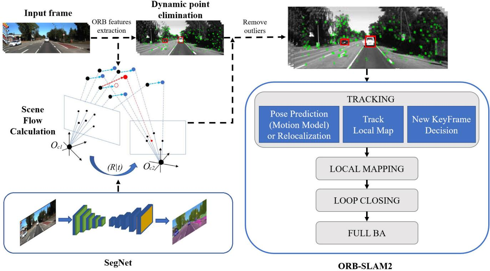
Fig. 1. System block diagram of our proposal. The image is input to two threads, respectively, one part is input to the segmentation network to obtain the semantic information of the pixel points, and the other part is to extract the feature points and input to light tracking to obtain the geometric information of the feature points. After removing the dynamic points, input the static points into the tracking and mapping thread of ORB-SLAM2 system.
III. SYSTEM DESCRIPTION
First, the framework of the article is introduced in Section III-A. Section III-B introduces the semantic segmentation method. In Section III-C, the geometric method is introduced; and finally, the fusion method is introduced.
A. Overview of the Proposed Approach
Considering that we only used visual information instead of multisensor, we used ORB-SLAM2 instead of ORB-SLAM3. Our system is based on the ORB-SLAM2 framework [36], which is an excellent feature-based SLAM framework. It contains three main threads: tracking, local mapping, and loop closing. In this article, we add a new semantic segmentation thread to obtain the semantic properties of the feature points. The images are processed in the tracking and semantic segmentation threads simultaneously. The system’s framework architecture is shown in Fig. 1. First, we input the left image of the stereo image into the segmentation thread to obtain the semantic information of all the pixels in each frame of the image. Then, we extract feature points from the image and remove feature points belonging to the dynamic category region. We temporarily hide the feature points of the dynamic region without actually removing them. The goal of this step is to restore the camera position with relative accuracy. Finally, the remained static feature points are used to match the feature points. The pose of the camera is preliminarily estimated to restore the spatial position of each feature point. On this basis, we maintain a window to calculate and record the velocity of feature points over time to reduce the impact of noise.
B. Semantic Segmentation Thread
The SegNet network is used for segmentation to accurately and quickly obtain the label information for each pixel. SegNet is one of the earliest architectures based on a fully convolutional pipeline. It uses an encoder–decoder architecture, which is now common in most semantic segmentation networks. We used the Cityscapes dataset to train SegNet and the KITTI dataset to fine-tune it. The Cityscapes dataset has 5000 images of driving scenarios in an urban environment. It has 19 categories of dense pixel annotation (97% coverage). The KITTI dataset is currently the world’s largest computer vision algorithm evaluation dataset in autonomous driving scenarios. It contains real image data collected from scenes in places such as urban areas, villages, and highways. Each image contains up to 15 cars and 30 pedestrians with varying degrees of occlusion and truncation. To adapt to the system input, we cropped the bottom of the Cityscapes dataset and cropped the middle part of the KITTI dataset. The final input image size is 352×1024. The Cityscapes dataset contains 33 classes, but we used only 15 of them. We selected 15 kinds of common outdoor objects, covering most of the objects that appear outdoors in daily life. The 15 classes selected were road, sidewalk, building, wall/fence, pole, traffic light, traffic sign, vegetation, terrain, sky, person/rider, car, truck/bus, motorcycle/bicycle, and void. Because the selected 15 classes can contain most of the objects in the outdoor environment, classes like cars and people have met the training requirements of dynamic outdoor scenes. Therefore, only 15 of these 33 classes are used for image segmentation in this article. The segmentation result is shown in Fig. 2. Our system is based on ORB-SLAM2 with the local mapping thread, loop closing thread, and mapping part in the system unchanged. For the SegNet network structure, we retained the network structure in the study. For the neural network structure, we used the SegNet variant Bayesian SegNet structure and maintained the MC dropout probability of 50% used in the Bayesian SegNet. This ensured that the system occupied less memory and ran at a higher speed without affecting the accuracy [2].
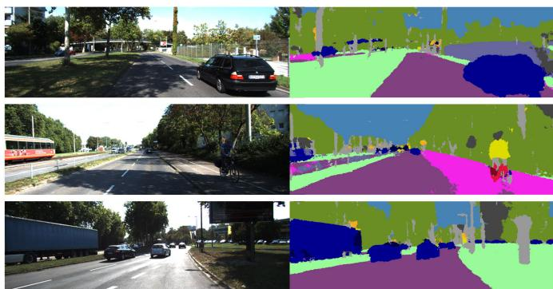
Fig. 2. Results of semantic segmentation. At the top is the picture of the 04 sequence in the KITTI dataset containing moving vehicles and the bottom is the semantic segmentation result.
C. Dynamic Feature Point Selection
In the semantic segmentation thread, the category label of each pixel is obtained through the segmentation thread. However, the semantic information for feature point selection cannot be used directly. For example, when a parked car occupies most of the pixels of the image, if the feature points belonging to the parked car—the potential dynamic object— are directly removed at this time, it will waste a lot of static feature points that can be used for positioning, resulting in a decrease in accuracy. Fig. 3 shows this scenario. Therefore, spatial motion detection is performed on the feature points to determine whether the feature points of the current dynamic category are in motion.
Our proposed method is as follows.
1) Scene Flow Calculation: We obtain the spatial motion of feature points through scene flow calculation. The feature point extraction method uses the method in ORB-SLAM2, and the image pyramid method is used to solve the feature point scale invariance during the feature point extraction process. The extracted feature points are used for feature point matching. As shown in Fig. 4, black dots and blue dots represent the displacement of spatial points between two frames, while the blue dotted arrow represents the displacement of static points. In a static scene, the spatial displacement of static points in the environment between two frames has the same overall trend. The red dots represent the spatial displacement of dynamic points. It can be seen that the overall direction and magnitude of the displacement in space are different from the overall trend of static space points. The current frame pose is obtained by the uniform motion model and the feature points were matched. After each successful tracking in ORB-SLAM2, the relative motion between two frames will be recorded as the motion model. When estimating the motion of the next frame, multiply the attitude of the previous frame by the uniform motion model to obtain the initial attitude value of the current frame. Then feature point matching is carried out, assuming that the uniform motion model is to speed up matching. The feature point matching still relies on the descriptor, so it does not affect the positioning accuracy in the case of nonuniform motion. The depth of the feature points is calculated by the stereo camera ranging. We use a stereo camera to obtain the depth of feature points and do not calculate the depth map or parallax map of the whole image. Using all the pixel information will greatly increase the amount of computation without increasing the accuracy of the system. Restore the spatial coordinates of feature points, and then calculate the scene flow.

Fig. 3. Result of removing the feature points of the dynamic area directly from the semantic information. The feature points of the car parked on the roadside can be used to improve the positioning accuracy.

Fig. 4. Schematic of the displacement of dynamic points and static points between adjacent frames.
The pixel coordinates of feature point matching pairs defined between two adjacent frames are and , and the depth of pixel points is and so the coordinates of space points under the current frame can be expressed as
where is the camera’s internal parameter, and z is the depth of the image.
The current point depth z is obtained according to the principle of stereo camera ranging
where is the baseline of camera, and is the parallax of the left image and the right image. The scenario flow is defined as
2) Variable-Length Window Filter: Theoretically, if the spatial displacement of a static feature point between different frames is , the displacement d between adjacent frames of a dynamic point should not be equal to zero. For example, the tracking framework used to cause error in camera pose estimation, such as inaccuracies in pose estimation and depth information obtained from stereo cameras. To reduce the influence of noise and better distinguish the threshold between dynamic points and static points, a variable-length window is set up for mean filtering. First, it records the speed value of the same feature point in consecutive frames. For each feature point, our method is to start recording from the first frame where the characteristic point appears and record the speed of the characteristic point in a row with the largest length. Finally, we calculate the average speed in the queue as the speed at that point in the current frame. The velocity is expressed as a vector. To unify the scale information, in actual operation, the displacement information is converted into the velocity of the characteristic points for threshold calculation. The average speed for map point i can be calculated as
where is the moving speed of each feature point, and is the length of the window. A set of motion information is maintained for each feature point.
Using the calculated velocity information, the map points can be divided into dynamic points and static points according to the threshold.
D. Feature Point Threshold Calculation
In Section III-C, the motion information is obtained for each processed feature point. In this section, the threshold is calculated for differentiating dynamic and static points in each frame. The potential dynamic points are restored to avoid a decrease in positioning accuracy caused by too few effective feature points in the image. First, we select the feature points with semantic information as static objects to participate in the calculation. At this stage, the average displacement of static points is calculated, and this is used as a benchmark to distinguish whether the feature points in the potential dynamic area are moving. The spatial points are calculated as follows:
where is the average displacement of the static point, representing the overall error. n represents the number of feature points, and represents the movement of a single feature point.
In the stereo version, the near point and far point are set in the original system through the baseline. The far point mainly affects its displacement, while the near point affects both rotation and translation. At the same time, because of the difference in displacement or speed of the near and far imaging points in the image, the expansion rate α is set as the benchmark between the stereo camera and the depth of the feature point according to the distance.
The reciprocal of the depth is taken as α to reduce the influence of noise on the threshold
where α represents the adjusted segmentation threshold according to the imaging distance. According to the imaging principle of the stereo camera, the dynamic threshold gradually decreases as the depth increases.
To improve positioning accuracy, when the number of feature points is sufficient, it is preferable to select feature points in the static area. Priorities are set for different moving objects. For example, streetlights and buildings have the highest priority, vehicles have the second-highest priority, and people have the lowest priority. In an outdoor environment, vehicles account for the majority of moving objects. Therefore, the proportion of vehicle feature points is the priority for feature point selection in this case.
In this way, we can accurately judge the movement of potential dynamic points by calculating s in each frame. Finally, the remaining feature points are input into the tracking thread of ORB-SLAM2 for subsequent optimization positioning and mapping.
After the system obtains each frame of image, it first obtains the potential dynamic region selected by the algorithm through semantic segmentation, that is, the vehicle category. After obtaining the depth information, the feature points of this category are associated with the spatial map points. The motion information of the spatial point is initially screened, and the projection of the 3-D point to the image plane is used to optimize the pose according to the reprojection error. In this process, the outliers and dynamic points are continuously eliminated. With the continuous increase in the number of observations, the stability of the map point, that is, its probability of being an interior point, increases continuously. The probability of a dynamic point in medium and long-term observations can be expressed as
where represents the probability that the point is a dynamic point. represents the proportion of the vehicle class in the total class of the class probability output by the network at this point. represents the number of frames that the point can be continuously observed, and k represents the number of frames for adjusting consecutive frame observations.
IV. EXPERIMENT AND RESULTS
In this section, we evaluate our system using the public dataset KITTI [37] and compare it with another state-of-art SLAM system, DynaSLAM [21], in dynamic scenes. We also compare our system with the original ORB-SLAM2 [36] system to quantify the improvements in our method over the latter for dynamic scenarios. To prove the improvement effect of our system in scenes with multiple dynamic objects, we conducted experiments in part of the sequence of KITTI raw data. All the experiments in this article were conducted on a computer using Ubuntu 16.04 operating system, Intel I7 CPU, 12-GB RAM, and two GeForce GTX 1080 Ti GPUs. Since CityScapes does not provide the ground truth of each series, we cannot conduct quantitative analysis. In the experimental part, we not only use KITTI odometer sequence but also use raw data sequence containing more dynamic scenes to evaluate our method. In this article, we choose DynaSLAM and ORB-SLAM2 as comparison algorithms. DynaSLAM is improved on the basis of the ORB-SLAM2 system. We make such a comparison to better highlight the effectiveness of the method proposed in this article. The programming language of SegNet is Python, and the programming language of the other parts is
A. Datasets
Different sequences in the KITTI dataset describe different scenarios. We ran all the sequences and compared the results to the true values to verify the effectiveness of our method. We selected several representative sequences for display, including high-speed running scenes, urban roads, suburban roads, and others. They also include objects commonly found in actual outdoor scenes, such as pedestrians, bicycles, motorcycles, cars, and others. Some of these sequences include running vehicles, cars parked on the side of the road, etc.
1) KITTI Odometry: We selected 11 sequences with true values to evaluate the accuracy of our visual odometer. KITTI data collection platform is equipped with two gray cameras and two color cameras to form a stereo camera. The gray camera and color camera are installed at a distance of 6 cm, and the same type of camera is installed at a distance of 54 cm. The platform is also equipped with four zoom lenses, a 64-line 3-D LiDAR, and IMU/GPS navigation system.
2) KITTI Raw Data: It is the original data record when the collection platform collects data. It is divided into different sequences according to cities, residential areas, highways, campuses, and pedestrians. The data sequence does not provide the odometer information of the data. Therefore, it must be processed first to obtain the ground-truth value when it is used as an odometer. Ground-truth value is an important basis for evaluating SLAM system. For a better quantitative comparison, we also conducted experiments on the KITTI raw data sequence. We selected a sequence 1003–0047 containing a large number of dynamic objects. Sequence 1003–0047 is a high-speed scene in KITTI raw data, which contains most vehicles in the whole sequence, so it is more suitable for the comparison of different methods in dynamic scenarios. 1003–0047 sequence runs in the highway scene, and there are a large number of moving vehicles in the whole sequence, which seriously affects the positioning of the system itself. And GPS data are used as the trajectory ground truth of these sequences for evaluation.
B. Qualitative and Quantitative Analyses
1) Qualitative Analysis: We conducted a qualitative analysis of our system. Fig. 5 shows two scenarios in which dynamic objects in dynamic scenes affect system positioning accuracy. A dynamic scene refers to a scene that contains a lot of moving vehicles. And the static scene refers to the current scene containing a large number of parked vehicles. The first column shows that the scene contains a lot of moving objects, and the system does not completely eliminate dynamic points, such as ORB-SLAM2, which affects the positioning accuracy. The second column shows the scene where most of the dynamic objects in the scene are not in motion in the current state. At this time, using methods such as DynaSLAM will eliminate these dynamic objects based on semantic information. But DynaSLAM directly uses semantic information to delete dynamic points, which will cause the current state of the feature point to be ignored, and the feature point that belongs to the dynamic object but the current state is static is lost, resulting in a decrease in accuracy. Each row in the figure shows the original image, the segmentation map, the feature points extracted by the ORB-SLAM2 system, only the feature points eliminated by the mask information, and the static feature points retained by our system. The mask information is generated by semantic segmentation. As shown in the figure, a large number of vehicles in the image on the left are moving, and ORB-SLAM2 cannot handle these dynamic points well, which shows a great impact on the positioning. Mask eliminates most of the feature points on the vehicle to improve positioning accuracy. Our system cannot completely eliminate dynamic points in this scenario, but it has a greater improvement than ORB-SLAM2. Our proposed method effectively removes the feature points on the moving objects in the dynamic area while retaining them in the unmoving objects. This improves the accuracy of estimating the robot’s pose and spatial position by relying on feature points, thus improving the positioning accuracy of the vehicle. The image in the right column has a large number of vehicles parked on the roadside that are not moving. Mask loses its advantage in this scenario, because the feature points extracted by the parked vehicles are static feature points, which can be used for positioning, thereby improving the positioning accuracy. In this scenario, our system adds the judgment of detecting the movement of the feature points, so it retains this part of the feature points, so as to achieve similar accuracy to ORB-SLAM2.
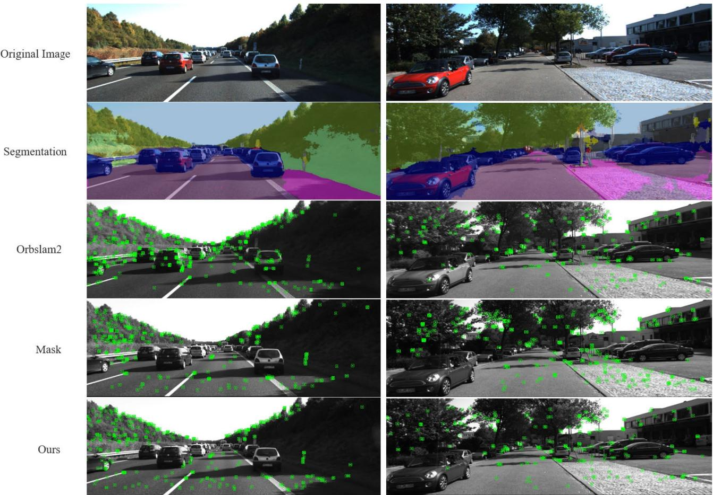
Fig. 5. First row is the original image is selected from the 1003 to 0047 sequence and 0926 to 0009 sequence of KITTI raw data, which represent static scenes and dynamic scenes, respectively. The second row is the segmented image provided by SegNet. The third row is the feature point image extracted by ORBSLAM2. The fourth row is the feature point image that only uses the mask generated by the segmentation map provided by SegNet to remove dynamic points. The fifth row is the feature point image extracted by our method.
2) Quantitative Analysis: We performed a quantitative analysis of our system. We compared our method to the DynaSLAM method in trajectory accuracy analysis of the stereo camera in 11 sequences. Since we use sparse scene flow to obtain the spatial motion of feature points for auxiliary positioning, most scene flow algorithms obtain their own motion information based on dense scene flow. Therefore, we compared our method with DynaSLAM and ORB-SLAM2 instead of other scene flow methods. The above method uses full pixels between frames as the basis for evaluating scene flow. Different from the method using deep network learning, our method calculates after extracting the spatial coordinates of the feature points between frames. Evaluating dynamic objects by correlating the motion of points does not perform calculations for all the pixels, as this would greatly increase the amount of computation. In this article, we just use sparse scene flow to distinguish dynamic and static points in space, not for localization. Therefore, we compared our method with DynaSLAM and ORB-SLAM2 instead of other scene flow methods. Table I shows our method’s results compared with DynaSLAM’s and ORB-SLAM2’s results. We used the absolute trajectory RMSE as an evaluation indicator. It can be seen that our method is better than the DynaSLAM and ORB-SLAM2 algorithms in most of the sequences, and it is approximately the same as the ORB-SLAM2 algorithm in certain sequences containing fewer dynamic objects.
Yang and Wang [6] also used a semantic-combined geometry approach to eliminate dynamic points, so we increase the comparison with this approach. Although this method uses the neural network method to obtain the depth of all the pixels in the image frame, our method is still comparable to its accuracy, and even better than this method in some sequence accuracy.
As shown in Table I, we also compare with DynaSLAM2 [38]. If the moving objects are mostly in motion, the results of DynaSLAM will perform well, but if the objects are temporarily in a stationary state (such as a stationary car), DynaSLAM will have a large trajectory error, because it belongs to the class of static vehicle. The features of the objects are not used for pose estimation, while the pose estimation of DynaSLAM2 is relatively accurate in both the cases. The reason is that in real scenes, the current state of dynamic objects is often static, resulting in static features not being used for pose estimation, and the speed of dynamic objects is estimated in DynaSLAM2, which can provide BA with useful information. DynaSLAM2 is built based on DynaSLAM and adds tracking of dynamic objects. When an object belonging to the dynamic class is actually stationary, DynaSLAM2 will also track its feature points, and the obtained velocity of the object will approach zero, so that the points on this object will actually be similar to static points. Consequently, DynaSLAM2 is better than DynaSLAM. Our method also restores the points belonging to dynamic categories, instead of simply eliminating them by semantic information. Table I also shows that the effect of our method is similar to that of DynaSLAM2, which verifies the effectiveness of our method.
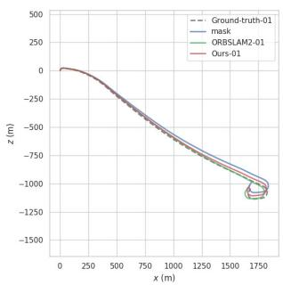
(a)
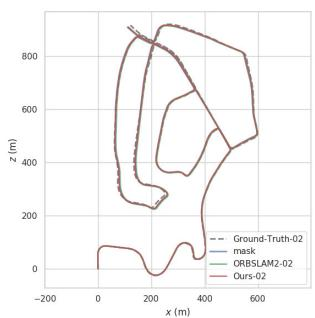
(b)
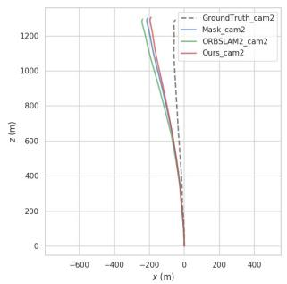
(c)
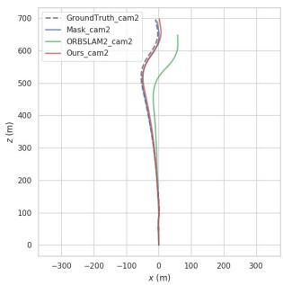
(d)
Fig. 6. Trajectory comparison for the 01 and 02 sequences of the KITTI odometry, and 0926-0101 and 1003–0047 sequences of the KITTI raw data dataset. (a) Sequence01. (b) Sequence02. (c) 0926–0101. (d) 1003–0047.
TABLE I
COMPARISON OF THE RMSE OF THE ATE (m) OF OUR SYSTEM AGAINST ORB-SLAM2 SYSTEM AND MASK FOR STEREO CAMERAS IN THE KITTI DATASET
| Sequence | ORB-SLAM2 | DynaSLAM | DynaSLAM2 | SSDM | Ours |
| ATE RMSE[m] | ATE RMSE[m] | ATE RMSE[m] | ATE RMSE[m] | ATE RMSE[m] | |
| KITTI 00 | 1.279 | 1.4 | 1.38 | 1.21 | 1.314 |
| KITTI 01 | 10.67 | 9.4 | 10.05 | 10.0 | 8.781 |
| KITTI 02 | 6.766 | 6.7 | 7.85 | 4.96 | 5.837 |
| KITTI 03 | 0.793 | 0.6 | 0.92 | - | 0.772 |
| KITTI 04 | 0.208 | 0.2 | 0.18 | 0.2 | 0.207 |
| KITTI 05 | 0.783 | 0.8 | 0.89 | 0.8 | 0.797 |
| KITTI 06 | 0.643 | 0.8 | 0.72 | 0.5 | 0.786 |
| KITTI 07 | 0.530 | 0.5 | 0.47 | 0.5 | 0.521 |
| KITTI 08 | 3.639 | 3.5 | 3.58 | 3.5 | 3.425 |
| KITTI 09 | 3.556 | 1.6 | 2.12 | 3.2 | 2.890 |
| KITTI 10 | 0.985 | 1.2 | 1.58 | 1 | 0.974 |
Since moving vehicles only appear in a few frames in a long sequence, the impact on the original system is limited, and the effectiveness of our method has not been verified. We also analyze a partial sequence containing a large number of vehicles in KITTI raw data. Table II shows the accuracy comparison of scenes with multiple dynamic objects. We increase the accuracy of using only the semantic information mask in the scene with multiple dynamic objects to verify the effectiveness of our method. From Table II, we can see that in the 1003–0047 sequence containing a large number of moving objects, our system is greatly improved compared with ORBSLAM2. And in the scene containing most static vehicles, our system is superior to the method using mask and ORB-SLAM2. Compared with the original ORB-SLAM2 system, the positioning accuracy of our method is improved by 39.5% This shows that our system can adapt to different scenarios. We also used the Python evo package to plot the absolute pose error (APE) and the motion trajectory. Fig. 6 shows the comparison of the trajectories of different methods close to the true value. In Fig. 6(a), we can see the sequence ORBSLAM2-01 performs better. This is because there are fewer frames with dynamic objects in the entire sequence, and our method will eliminate some feature points, resulting in fewer frame feature points than the original method, so the positioning accuracy is slightly lower than that of the original method, but in scenes with many dynamic objects (1003– 0047), our method has a better performance. Fig. 7 shows the trajectory errors of different algorithms in some sequences. Our method has smaller errors in high-speed scenes containing most dynamic objects and is closer to the ground truth. In the 1003–0047 sequence, the improvement of the true value by our method is significant. In these sequences, which contain dynamic objects, our proposed method is an improvement over the original method. Since we retain most of the feature points in the image even if the object is located in the dynamic area, we have kept most of the feature points in the scene containing most of the vehicles. Thus, we can see that the trajectory in some fragments is very close to the ground truth. Similarly, in some fragments containing moving objects, the trajectory generated by our method is more suitable for the ground truth.
TABLE II
COMPARISON OF THE RMSE OF THE ATE (m) OF OUR SYSTEM AGAINST ORB-SLAM2 SYSTEM AND MASK FOR STEREO CAMERAS IN THE KITTI RAW DATA
| Sequence | ORB-SLAM2 | Mask | Ours |
| ATE RMSE[m] | ATE RMSE[m] | ATE RMSE[m] | |
| 0926-0009 | 2.514 | 2.761 | 2.637 |
| 0926-0013 | 1.211 | 1.211 | 1.283 |
| 0926-0014 | 2.540 | 2.429 | 2.294 |
| 0926-0051 | 1.349 | 1.351 | 1.242 |
| 0926-0101 | 17.934 | 15.352 | 14.032 |
| 0929-0004 | 0.704 | 0.411 | 0.394 |
| 1003-0047 | 15.127 | 1.536 | 3.142 |
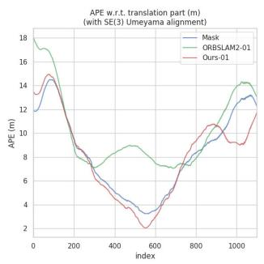
(a)
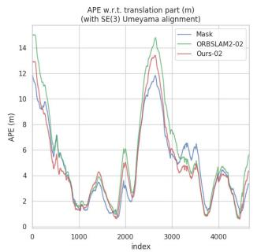
(b)
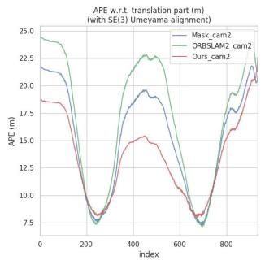
(c)
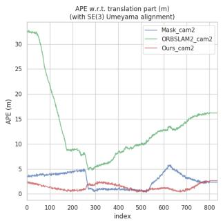
(d)
Fig. 7. Trajectory error distribution for the 01 and 02 sequences of the KITTI odometry, and 0926–0101 and 1003–0047 sequences of the KITTI raw data dataset. (a) Sequence01. (b) Sequence02. (c) 0926–0101. (d) 1003–0047.
C. Discussion
As shown in Table I, our method is better than the original ORB-SLAM2 system, DynaSLAM system, and DynaSLAM2 system in some sequences. In some sequences with few dynamic objects, our method is not as good as others, but the results are very close. Because dynamic objects have little influence on these sequences, the accuracy of our method is reduced due to the reduction in the number of feature points. The accuracy of the DynaSLAM system is lower than that of the original ORB-SLAM2 system in some sequences, but our method’s accuracy is the same as that of the original system. This is because the DynaSLAM system directly removes from the feature points objects judged as dynamic regions by semantic information, regardless of whether their current state is in motion, which decreases DynaSLAM’s accuracy. For example, cars parked on both sides of the road and not currently moving, which fully meets the requirements of static objects, and the feature points extracted from these objects can be used to locate the robot. Our method retains more of these feature points, thus improving the positioning accuracy. Furthermore, in contrast to the increase in positioning accuracy of dynamic object processing in indoor scenes, the accuracy in outdoor scenes is limited, which is reasonable. In the KITTI odometry dataset, the proportion of dynamic objects in most of the sequences is small, so the accuracy improvement of our model is small. Our method performs well on the raw dataset of high-speed scenes containing the most dynamic objects. In general, our method greatly improves positioning accuracy in the SLAM process.
V. CONCLUSION
This article proposes a novel method that combines semantic segmentation information and spatial motion information of associated pixels to solve the SLAM problem in a dynamic environment. A new thread is added to run SegNet to obtain the semantic information of each pixel. Also, we propose a new method for combining semantic information and multiview geometric information, which can avoid the reduction in positioning accuracy caused by mistakenly deleting static feature points. First, semantic information and multiview geometric information are combined to verify feature points at the same time, which can not only eliminate the feature points of moving objects in the current state and the impact of dynamic objects on the system but also use the feature points extracted by potential moving objects to improve the positioning accuracy of the system. Second, observation consistency is used to screen dynamic points and static points, which can effectively improve the positioning accuracy of the system and increase the robustness of the system in complex scenes. Compared with the original system, the accuracy of our method is greatly improved and the robustness of the system is also improved in the scenario with many dynamic objects. Our system was validated on the KITTI dataset and compared with the DynaSLAM, DynaSLAM2, and ORB-SLAM2 methods. However, our system has some limitations. This method can only work as a stereo SLAM. Despite the multithreaded operation, the system still cannot run in real-time because of the long time spent in segmentation. In future work, we will use a simpler network structure to obtain semantic information, which can be applied to many real-time applications, such as autonomous driving and robotic autonomous navigation. Also, when dynamic objects occupy most of the image, positioning fails because of the inability to provide enough static points. And, we aim to track moving objects to solve this problem.
REFERENCES
[1] J. Long, E. Shelhamer, and T. Darrell, “Fully convolutional networks for semantic segmentation,” in Proc. IEEE Conf. Comput. Vis. Pattern Recognit., Aug. 2015, pp. 3431–3440.
[2] V. Badrinarayanan, A. Kendall, and R. Cipolla, “SegNet: A deep convolutional encoder–decoder architecture for image segmentation,” IEEE Trans. Pattern Anal. Mach. Intell., vol. 39, no. 12, pp. 2481–2495, Dec. 2017.
[3] O. Ronneberger, P. Fischer, and T. Brox, “U-Net: Convolutional networks for biomedical image segmentation,” in Proc. Int. Conf. Med. Image Comput. Comput.-Assist. Intervent. Cham, Switzerland: Springer, 2015, pp. 234–241.
[4] H. Zhao, J. Shi, X. Qi, X. Wang, and J. Jia, “Pyramid scene parsing network,” in Proc. IEEE Conf. Comput. Vis. Pattern Recognit., 2017, pp. 2881–2890.
[5] K. He, G. Gkioxari, P. Dollár, and R. Girshick, “Mask R-CNN,” in Proc. IEEE Int. Conf. Comput. Vis., Oct. 2017, pp. 2961–2969.
[6] L. Yang and L. Wang, “A semantic SLAM-based dense mapping approach for large-scale dynamic outdoor environment,” Measurement, vol. 204, Nov. 2022, Art. no. 112001.
[7] W.-C. Ma, S. Wang, R. Hu, Y. Xiong, and R. Urtasun, “Deep rigid instance scene flow,” in Proc. IEEE/CVF Conf. Comput. Vis. Pattern Recognit. (CVPR), Jun. 2019, pp. 3609–3617.
[8] Z. Teed and J. Deng, “RAFT-3D: Scene flow using rigid-motion embeddings,” in Proc. IEEE/CVF Conf. Comput. Vis. Pattern Recognit. (CVPR), Sep. 2021, pp. 8371–8380.
[9] W. Tan, H. Liu, Z. Dong, G. Zhang, and H. Bao, “Robust monocular SLAM in dynamic environments,” in Proc. IEEE Int. Symp. Mixed Augmented Reality (ISMAR), Oct. 2013, pp. 209–218.
[10] B. Song, X. Yuan, Z. Ying, B. Yang, Y. Song, and F. Zhou, “DGM-VINS: Visual–inertial SLAM for complex dynamic environments with joint geometry feature extraction and multiple object tracking,” IEEE Trans. Instrum. Meas., vol. 72, pp. 1–11, 2023.
[11] D. Zou and P. Tan, “CoSLAM: Collaborative visual SLAM in dynamic environments,” IEEE Trans. Pattern Anal. Mach. Intell., vol. 35, no. 2, pp. 354–366, Feb. 2012.
[12] P. F. Alcantarilla, J. J. Yebes, J. Almazán, and L. M. Bergasa, “On combining visual slam and dense scene flow to increase the robustness of localization and mapping in dynamic environments,” in Proc. IEEE Int. Conf. Robot. Autom., Jun. 2012, pp. 1290–1297.
[13] I. A. Barsan, P. Liu, M. Pollefeys, and A. Geiger, “Robust dense mapping for large-scale dynamic environments,” in Proc. IEEE Int. Conf. Robot. Autom. (ICRA), May 2018, pp. 7510–7517.
[14] J. Dai, K. He, and J. Sun, “Instance-aware semantic segmentation via multi-task network cascades,” in Proc. IEEE Conf. Comput. Vis. Pattern Recognit. (CVPR), Jun. 2016, pp. 3150–3158.
[15] O. Kähler, V. A. Prisacariu, C. Y. Ren, X. Sun, P. Torr, and D. Murray, “Very high frame rate volumetric integration of depth images on mobile devices,” IEEE Trans. Vis. Comput. Graphics, vol. 21, no. 11, pp. 1241–1250, Nov. 2015.
[16] M. Nießner, M. Zollhöfer, S. Izadi, and M. Stamminger, “Real-time 3D reconstruction at scale using voxel hashing,” ACM Trans. Graph., vol. 32, no. 6, pp. 1–11, Nov. 2013.
[17] T. Ji, C. Wang, and L. Xie, “Towards real-time semantic RGB-D SLAM in dynamic environments,” in Proc. IEEE Int. Conf. Robot. Autom. (ICRA), May 2021, pp. 11175–11181.
[18] L. Xiao, J. Wang, X. Qiu, Z. Rong, and X. Zou, “Dynamic-SLAM: Semantic monocular visual localization and mapping based on deep learning in dynamic environment,” Robot. Auto. Syst., vol. 117, pp. 1–16, Jul. 2019.
[19] P. Ganti and S. L. Waslander, “Network uncertainty informed semantic feature selection for visual SLAM,” in Proc. 16th Conf. Comput. Robot Vis. (CRV), May 2019, pp. 121–128.
[20] S. Qiao, Y. Zhu, H. Adam, A. Yuille, and L.-C. Chen, “ViP-DeepLab: Learning visual perception with depth-aware video panoptic segmentation,” in Proc. IEEE/CVF Conf. Comput. Vis. Pattern Recognit., Jun. 2021, pp. 3997–4008.
[21] B. Bescos, J. M. Fácil, J. Civera, and J. Neira, “DynaSLAM: Tracking, mapping, and inpainting in dynamic scenes,” IEEE Robot. Autom. Lett., vol. 3, no. 4, pp. 4076–4083, Oct. 2018.
[22] C. Yu et al., “DS-SLAM: A semantic visual slam towards dynamic environments,” in Proc. IEEE/RSJ Int. Conf. Intell. Robots Syst. (IROS), Jun. 2018, pp. 1168–1174.
[23] M. Kaneko, K. Iwami, T. Ogawa, T. Yamasaki, and K. Aizawa, “Mask-SLAM: Robust feature-based monocular slam by masking using semantic segmentation,” in Proc. IEEE Conf. Comput. Vis. Pattern Recognit. Workshops, Jun. 2018, pp. 258–266.
[24] W. Dai, Y. Zhang, P. Li, Z. Fang, and S. Scherer, “RGB-D SLAM in dynamic environments using point correlations,” IEEE Trans. Pattern Anal. Mach. Intell., vol. 44, no. 1, pp. 373–389, Jan. 2020.
[25] J. Cheng, Z. Wang, H. Zhou, L. Li, and J. Yao, “DM-SLAM: A featurebased SLAM system for rigid dynamic scenes,” ISPRS Int. J. Geo-Information, vol. 9, no. 4, p. 202, Mar. 2020.
[26] M. Schorghuber, D. Steininger, Y. Cabon, M. Humenberger, and M. Gelautz, “SLAMANTIC-leveraging semantics to improve VSLAM in dynamic environments,” in Proc. IEEE/CVF Int. Conf. Comput. Vis. Workshops, Oct. 2019, pp. 3759–3768.
[27] J. Cheng, H. Zhang, and M. Q.-H. Meng, “Improving visual localization accuracy in dynamic environments based on dynamic region removal,” IEEE Trans. Autom. Sci. Eng., vol. 17, no. 3, pp. 1585–1596, Jul. 2020.
[28] D. V. Nam and K. Gon-Woo, “Robust stereo visual inertial navigation system based on multi-stage outlier removal in dynamic environments,” Sensors, vol. 20, no. 10, p. 2922, May 2020.
[29] M. Henein, J. Zhang, R. Mahony, and V. Ila, “Dynamic SLAM: The need for speed,” in Proc. IEEE Int. Conf. Robot. Autom. (ICRA), Jul. 2020, pp. 2123–2129.
[30] W. Xie, P. X. Liu, and M. Zheng, “Moving object segmentation and detection for robust RGBD-SLAM in dynamic environments,” IEEE Trans. Instrum. Meas., vol. 70, pp. 1–8, 2021.
[31] S. Cheng, C. Sun, S. Zhang, and D. Zhang, “SG-SLAM: A realtime RGB-D visual SLAM toward dynamic scenes with semantic and geometric information,” IEEE Trans. Instrum. Meas., vol. 72, pp. 1–12, 2023.
[32] Y. Liu and J. Miura, “RDS-SLAM: Real-time dynamic SLAM using semantic segmentation methods,” IEEE Access, vol. 9, pp. 23772–23785, 2021.
[33] J. Chang, N. Dong, and D. Li, “A real-time dynamic object segmentation framework for SLAM system in dynamic scenes,” IEEE Trans. Instrum. Meas., vol. 70, pp. 1–9, 2021.
[34] P. Li et al., “Stereo vision-based semantic 3D object and ego-motion tracking for autonomous driving,” in Proc. Eur. Conf. Comput. Vis. (ECCV), 2018, pp. 646–661.
[35] M. P. Muresan and S. Nedevschi, “Multi-object tracking of 3D cuboids using aggregated features,” in Proc. IEEE 15th Int. Conf. Intell. Comput. Commun. Process. (ICCP), Sep. 2019, pp. 11–18.
[36] R. Mur-Artal and J. D. Tardós, “ORB-SLAM2: An open-source SLAM system for monocular, stereo, and RGB-D cameras,” IEEE Trans. Robot., vol. 33, no. 5, pp. 1255–1262, Oct. 2017.
[37] A. Geiger, P. Lenz, and R. Urtasun, “Are we ready for autonomous driving? The KITTI vision benchmark suite,” in Proc. IEEE Conf. Comput. Vis. Pattern Recognit., Jun. 2012, pp. 3354–3361.
[38] B. Bescos, C. Campos, J. D. Tardos, and J. Neira, “DynaSLAM II: Tightly-coupled multi-object tracking and SLAM,” IEEE Robot. Autom. Lett., vol. 6, no. 3, pp. 5191–5198, Jul. 2021.
Shuhuan Wen (Senior Member, IEEE) received the Ph.D. degree in control theory and control engineering from the Yanshan University, Qinhuangdao, China, in 2005.
She was a Visiting Scholar with the Ottawa University, Ottawa, ON, Canada, Carleton University, Ottawa, and Simon Fraser University, Burnaby, BC, Canada, from 2011 to 2013. She was also a Visiting Professor at the University of Alberta, Edmonton, AB, Canada, from 2021 to 2022. She is currently a Professor of automatic control with the Department
of Electric Engineering, Yanshan University. She has coauthored one book and about 40 papers. Her current research interests include simultaneous localization and mapping (SLAM), computer vision, robotics, and 3-D object recognition and reconstruction.
Dr. Wen is an Associate Editor of IROS from 2021 to 2022.
Xiongfei Li received the bachelor’s degree from the Department of Mechanical and Electrical Engineering, Shaoxing University, Zhejiang, China, in 2017. He is currently pursuing the master’s degree in control science and engineering from Yanshan University, Qinhuangdao, China.
His current research interests include simultaneous localization and mapping (SLAM) and machine vision.
Xin Liu (Student Member, IEEE) received the B.Sc. degree in automation from Yanshan University of Science and Technology, Qinhuangdao, China, in 2019. He is currently pursuing the M.Sc. degree with the Department of Electric Engineering, Yanshan University, Qinhuangdao.
His current research interests include simultaneous localization and mapping (SLAM) and multisensor information fusion.
Yidan Long received the bachelor’s degree from the School of Electrical and Information Engineering, Tianjin University, Tianjin, China, in 2021. He is currently pursuing the master’s degree in control science and engineering with Yanshan University, Qinhuangdao, China.
His current research interests include simultaneous localization and mapping (SLAM) and computer vision.
Jiaqi Li received the bachelor’s degree from the Lanzhou Jiaotong University, Lanzhou, China, in 2019. She is currently pursuing the master’s degree in control science and engineering with Yanshan University, Qinhuangdao, China.
Her current research interests include simultaneous localization and mapping (SLAM) and computer vision.
Sheng Tao received the bachelor’s degree from the School of Electrical and Information Engineering, Yanshan University, Qinhuangdao, China, in 2021, where he is currently pursuing the master’s degree in control science and engineering.
His current research interests include simultaneous localization and mapping (SLAM) and computer vision.
Tony Qiu received the B.Sc. and M.Sc. degrees from Tsinghua University of China, Beijing, China, in 2001 and 2003, respectively, and the Ph.D. degree from the University of Wisconsin–Madison, Madison, WI, USA, in 2007.
From 2008 to 2009, he worked as a Post-Doctoral Researcher at the California PATH Program, University of California at Berkeley, Berkeley, CA, USA. He is currently an Associate Professor with the Department of Civil and Environmental Engineering, University of Alberta, Edmonton, AB, Canada,
Since 2009, he has been with U of A, he founded the Intelligent Transportation Systems (ITS) Research Laboratory, now called the Centre for Smart Transportation (CST).
Dr. Qiu holds the Canada Research Chair in Cooperative Transportation Systems and the NSERC Industrial Research Chair in Intelligent Transportation Systems.
md/2023_Dynamic_SLAM__A_Visual_SLAM_in_Outdoor_Dynamic_Scenes.md 预渲染生成（OCR 语料，插图取自原文）。
公式以 MathML 呈现，浏览器原生渲染，不依赖外部脚本或字体 CDN。